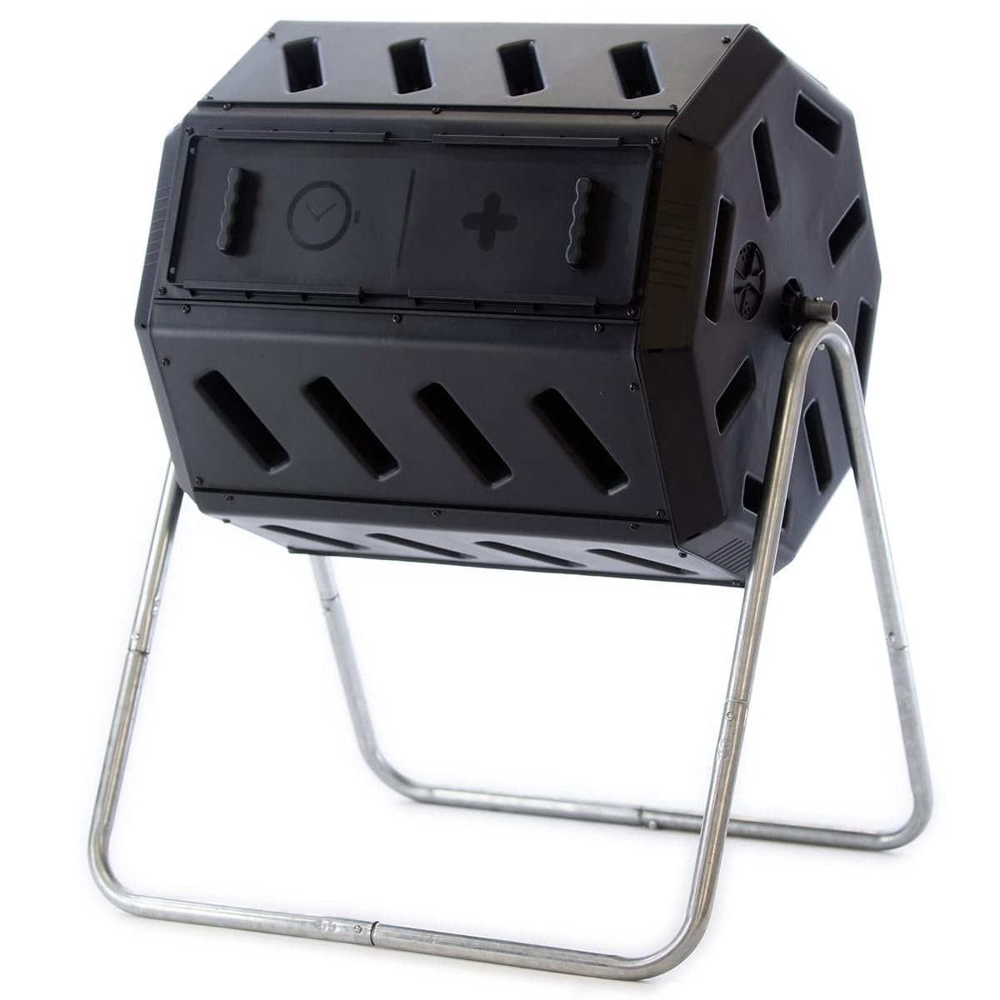

Review · Tumblers
FCMP IM4000: the tumbler the rest of the category gets measured against
37 gallons, two chambers, a body made entirely of recycled plastic, and 18,737 Amazon ratings landing at 4.4 stars — the long-running benchmark of the tumbler class, what the design actually does well, and what the two-chamber rhythm asks of you.
Disclosure: the Amazon links on this page are affiliate links — if you buy through them we earn a commission at no extra cost to you. It never changes the verdict below; the numbers are FCMP’s own, verified against the live listing on Nov 15, 2026.
One line: buy it if you want the tumbler the reviews compare every other tumbler to; skip it only if you specifically want a bigger drum per dollar or HOTFROG’s split-body spin.
What the IM4000 is
The IM4000 is the default answer to “should I buy a compost tumbler?” An elevated octagonal drum on a galvanized steel frame, 37 gallons split into two chambers, sold continuously for years and now sitting at 4.4 stars across 18,737 ratings — the largest review base in the tumbler class we checked on Nov 15, 2026. The listing is explicit about provenance: Forest City Models and Patterns (FCMP Outdoor), made in Canada, manufacturing for 40 years.
The design is old and deliberately simple, and that is the point. The body is 100% post-consumer recycled polypropylene — BPA-free and UV-inhibited — with deep exterior fins that double as handholds and clump-breakers, aeration holes through the panels, a removable door, and a corrosion-resistant steel frame with built-in wheels. It weighs 28 pounds empty and carries a 1-year limited replacement warranty.
The specs, verified
| Parameter | Value |
|---|---|
| Capacity | 37 gallons (a 22-gallon variant exists on the same listing) |
| Chambers | 2 — one drum, split; the whole drum rotates on one axis |
| Body | 100% post-consumer recycled polypropylene; BPA-free, UV-inhibited |
| Frame | Galvanized steel, corrosion-resistant, elevated, with wheels |
| Dimensions | 30″ L × 28″ W × 36″ H |
| Empty weight | 28 lb |
| Warranty | 1-year limited replacement |
| Review base | 4.4 / 5 across 18,737 Amazon ratings (Nov 15, 2026) |
| Price | $ tier — listing observed high $50s to ~$100 across November 2026 |
How we verify listings, and what the $ / $$ / $$$ price tiers mean, is laid out on the methodology page.
How it composts — the two-chamber rhythm
One chamber composts while the other cures. You fill whichever side is empty, close the sliding door, and use the fins as handholds to rotate the whole drum — the listing’s own usage guidance is a turn every two to three days. Swap sides when a chamber finishes and the brand’s pitch is an uninterrupted stream of finished compost.
The honest timeline is two clocks, not one: the hot, active phase inside the drum runs weeks when the mix and the turning are right, and the cure afterward still takes time. The same expectations we lay out in how long composting takes apply to any tumbler, including this one. FCMP’s “finished in weeks” is an active-phase claim under good conditions, not a guarantee for a half-filled drum in April.
Where the design genuinely earns its reputation is aeration. Rotating a drum with internal fins and through-holes does in seconds what turning a pile with a pitchfork does in twenty minutes, and oxygen is the variable that most beginner piles get wrong. A compost thermometer reads a tumbler like any pile — see our thermometer showdown for which one to use.
What it earns, and what it costs you
Money first: this is a $ tier machine, but the listing price is not stable. Across our November 2026 checks the same configuration appeared at $99.99 on the main listing and $59.45 inside FCMP’s own comparison module. Treat the swing as normal for this category and buy on a quiet week.
The real cost is attention. A tumbler is not a composter you can forget: miss the two-to-three-day turning rhythm and the drum goes anaerobic and slow, which is the single most common complaint pattern across tumbler reviews of every brand (see troubleshooting for the fix). And 37 gallons is small for a yard that generates an autumn’s worth of leaves at once — the drum fills before the compost finishes, and you need somewhere to put the half-load.
IM4000 vs the rest of the tumbler lineup
Against the VIVOSUN 43: the VIVOSUN holds 43 gallons in a smaller footprint for less money, with a similar steel-frame philosophy — pick it on capacity-per-dollar, pick the IM4000 on track record (18,737 ratings vs 9,953). Against the HOTFROG dual body: same brand, same 30×28×36 footprint, same total capacity — but two independently spinning bodies instead of one split drum, at roughly twice the price. You are paying for turning effort, not compost. All seven tumblers we verified side by side are on the full tumblers roundup; if you are not sold on tumbling at all, start with static bins.
The questions, answered
Is the IM4000 two separate composters?
No — it is one octagonal drum divided into two chambers on a single axis, and the whole drum rotates together. FCMP’s HOTFROG is the model with two independently spinning bodies; the difference is reviewed side by side on this site.
How often do I turn it?
The listing’s own usage guidance is a turn every two to three days using the built-in fins. Turn more often and the active phase speeds up; skip a week and expect a stalled, sour-smelling chamber — the recovery steps are on the troubleshooting page.
Will it keep animals out?
The listing makes no rodent-proof claim. The chamber closes with a door and the drum sits off the ground on a frame, which helps, but in this class animal pressure is a habit problem (sealed scraps, no meat in open bins) more than a hardware feature. See the troubleshooting page before assuming any bin is critter-proof.
Is there a smaller version?
Yes — the same listing carries a 22-gallon variant of the IM4000 (verified Nov 15, 2026). The 37-gallon configuration is the one with the 18,737-rating review base and the one this review scores.
Keep reading
- The full tumblers roundup — all seven verified tumblers, specs side by side.
- VIVOSUN 43-Gallon review — the capacity-per-dollar rival, reviewed.
- HOTFROG dual-body review — the same brand’s answer to the IM4000’s one-drum design.
- How long composting takes — the two-clock timeline every tumbler claim has to live inside.
- Best compost bins — the static-bin alternative, if a drum is not your shape.